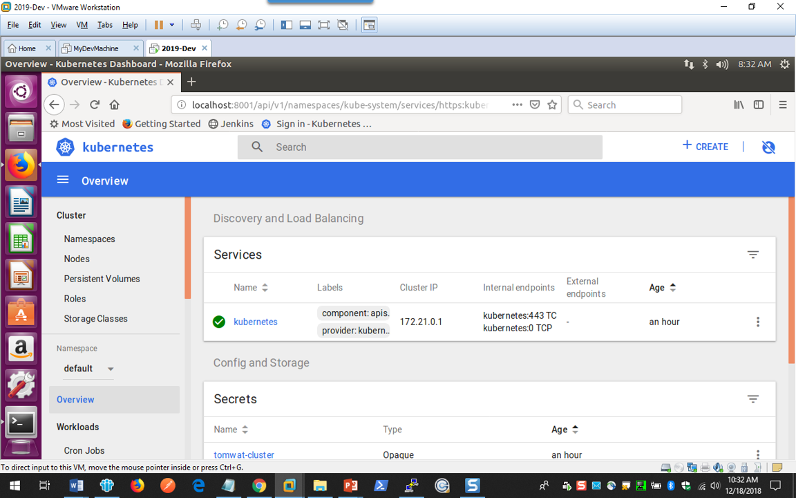
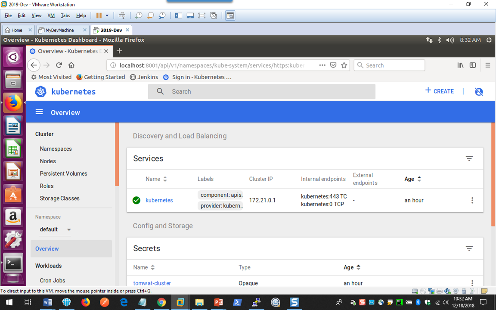

I selected Single Node, 4 vcpu, 16gb RAM ... Approx $227.00 per month
To work with the cluster you need the "ibmcloud" CLI
This is a good place to go:
https://console.bluemix.net/docs/cli/index.html#overview
This command:
$ curl -sL https://ibm.biz/idt-installer | bash
will download "ibmcloud" CLI and other useful tools - kubectl, helm, etc.
Once you have kubectl, you can validate your cluster is ready:
$ kubectl get nodes
NAME STATUS ROLES AGE VERSION
10.187.128.46 Ready
Gaining access to your cluster:
$ ibmcloud login -a https://api.ng.bluemix.net
$ ibmcloud cs region-set us-south
$ ibmcloud cs cluster-config tomwat-cluster
$ export KUBECONFIG=/home/tomwat/.bluemix/plugins/container-service/clusters/tomwat-cluster/kube-config-dal13-tomwat-cluster.yml
$ kubectl get nodes
To deploy applications to IBM Kubernetes Service (IKS) you need to create a registry
Follow this tutorial:
https://console.bluemix.net/containers-kubernetes/registry/main/start
Kubernetes dashboard setup. You have 2 options. 1) within IBM Cloud, there is a button for the dashboard.
2) Kubernetes dashboard remote access:
https://8gwifi.org/docs/kube-dash.jsp
Note - the dashboard and dashboard service are already deployed as part of the base IBM K8S service. You need to run the clusterrolebinding YAML to gain access via the service account.
$ kubectl create -f dashboard-admin.yaml
Then you start the proxy:
$ kubectl proxy
When confronted with Authentication screen, select "Skip".
If you want to configure token, again look here:
https://8gwifi.org/docs/kube-dash.jsp
 
